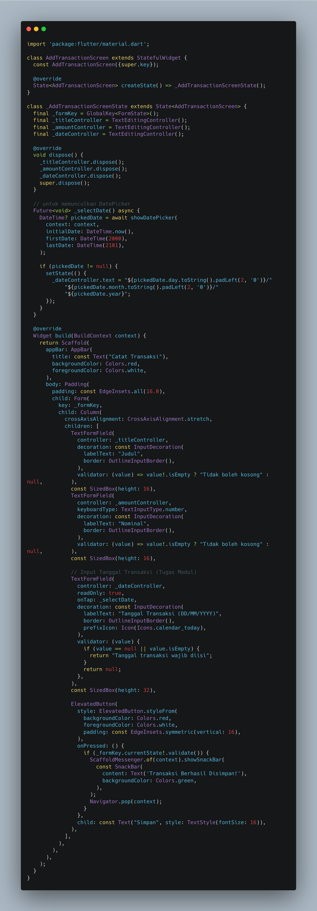
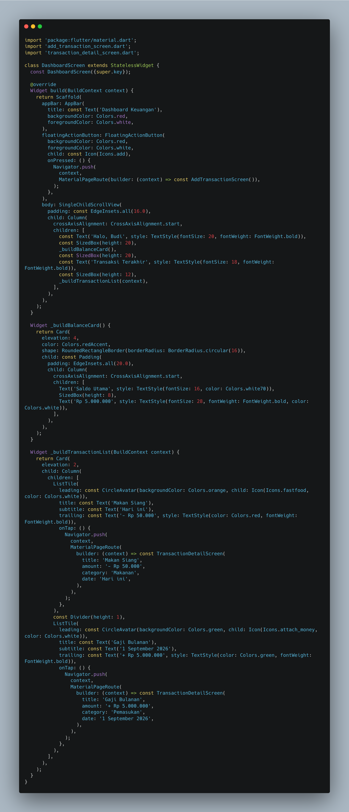
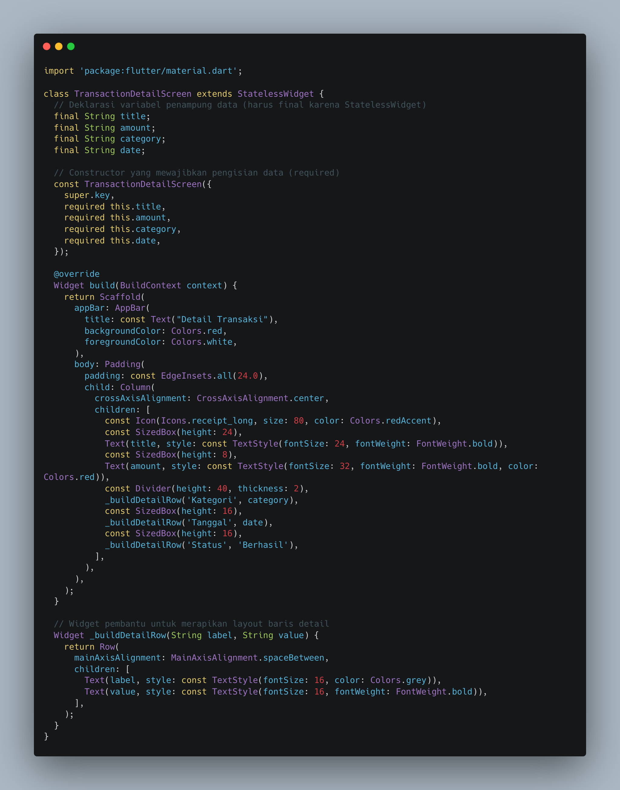
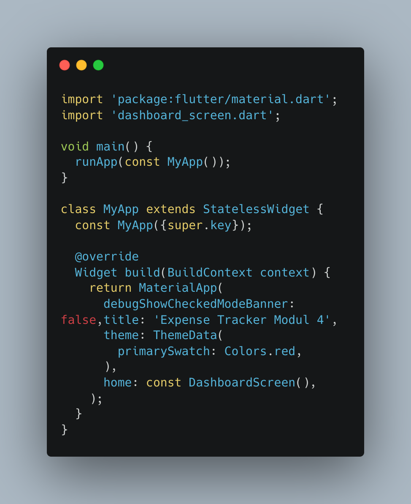
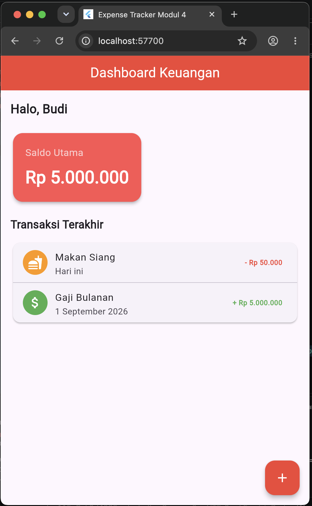
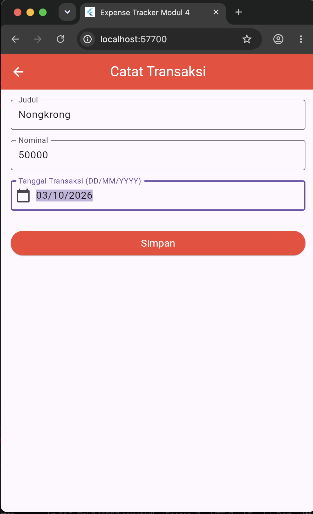
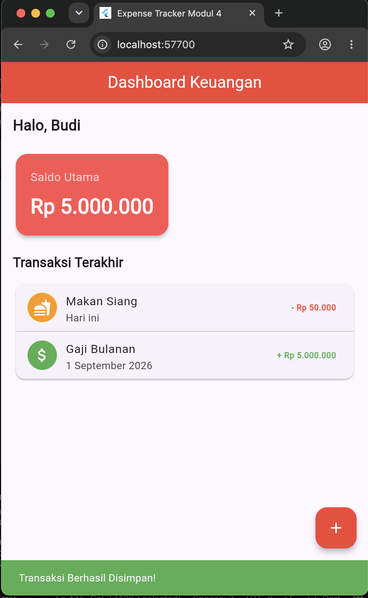

Modul 4: Navigasi & Passing Data (Navigator, Konsep Stack, dan Constructor)
Dalam pengembangan aplikasi mobile berbasis Flutter, pengelolaan alur perpindahan antarhalaman dan pengiriman informasi memegang peranan esensial untuk membentuk pengalaman pengguna yang interaktif. Modul keempat ini membahas konsep tumpukan atau stack melalui penggunaan widget Navigator, di mana metode push berfungsi untuk menumpuk halaman baru di atas layar aktif, sedangkan metode pop berperan menutup halaman teratas guna kembali ke layar sebelumnya.
Selain mekanisme navigasi rute, modul ini juga mengeksplorasi teknik pengiriman data antarhalaman menggunakan constructor. Dengan mendefinisikan variabel berjenis final serta penerapan kata kunci required pada kelas tujuan, aplikasi mampu menerima, mengolah, dan menampilkan data secara dinamis sesuai dengan aksi spesifik yang dilakukan oleh pengguna pada antarmuka.
Navigator.push untuk berpindah ke layar baru.Navigator.pop untuk menutup layar setelah aksi selesai.Berikut adalah tahapan implementasi kode program untuk membangun arsitektur navigasi dan pengiriman data terstruktur:
Tahap awal dimulai dengan membuat file baru guna menampung rincian informasi transaksi. Halaman ini dirancang menggunakan kelas StatelessWidget yang mendeklarasikan variabel penampung data bersifat final serta mewajibkan pengisian parameter melalui constructor. Data yang dikirimkan kemudian dirender ke dalam elemen teks antarmuka untuk menampilkan informasi lengkap.

Snippet 1. Pembuatan Halaman Detail dan Penerima Parameter Constructor
Halaman utama atau Dashboard disesuaikan agar tombol aksi dan daftar item transaksi dapat diinteraksikan secara langsung. Pada komponen daftar transaksi, fungsi onTap ditambahkan bersama Navigator.push dan MaterialPageRoute untuk mengarahkan pengguna menuju TransactionDetailScreen sekaligus membawa data spesifik seperti judul, nominal, kategori, dan tanggal.

Snippet 2. Implementasi Navigasi Push dan Passing Data pada Dashboard
Pengembangan dilanjutkan pada file formulir transaksi dari modul sebelumnya untuk mengotomatisasi proses keluar halaman. Ketika tombol simpan ditekan dan seluruh validasi form dinyatakan berhasil, sistem akan menampilkan notifikasi SnackBar, diikuti oleh eksekusi kode Navigator.pop(context) guna menutup form dan mengembalikan pengguna ke halaman Dashboard.

Snippet 3. Eksekusi Navigator.pop setelah Validasi Formulir Sukses
File utama main.dart dikonfigurasi untuk menjalankan widget MyApp dengan penerapan tema warna dasar merah (Red). Properti home diatur secara langsung untuk memuat kelas DashboardScreen sebagai tampilan antarmuka awal ketika aplikasi pertama kali dieksekusi.

Snippet 4. Konfigurasi Root Aplikasi pada file main.dart
Berikut adalah hasil uji coba antarmuka aplikasi yang memperlihatkan fungsionalitas perpindahan layar, penambahan tombol kembali otomatis, serta penyesuaian teks detail berdasarkan data baris yang dipilih:

Gambar 1. Hasil Tampilan Halaman Dashboard dan Detail Transaksi
Pada bagian tugas praktikum modul ini, pengembangan difokuskan pada penambahan fitur input tanggal transaksi menggunakan fungsi showDatePicker serta validasi form agar data wajib terisi sebelum disimpan[cite: 18]. Terkait alur penyimpanan data, secara default pada modul dasar, setelah tombol simpan ditekan aplikasi hanya menjalankan perintah Navigator.pop() dan menampilkan notifikasi SnackBar tanpa memperbarui daftar list di dashboard secara dinamis (sehingga data statis awal tetap berjumlah dua transaksi)[cite: 18].
Agar pengalaman pengguna menjadi jauh lebih interaktif dan aplikatif, pendekatan yang paling ideal adalah menerapkan manajemen state atau mengirim balik data (passing data back via pop result) dari form pencatatan ke halaman dashboard. Dengan cara ini, setiap kali pengguna memasukkan data baru melalui form, data tersebut akan ditambahkan ke dalam list state dashboard dan langsung muncul sebagai item transaksi baru di bawah riwayat.
Berikut adalah dokumentasi hasil tangkapan layar (screenshot) dari rangkaian pengujian aplikasi yang mencakup halaman utama dashboard, formulir pencatatan transaksi, serta notifikasi validasi beserta penambahan data baru:

Gambar 2. Form Catat Transaksi

Gambar 3. Validasi Data
Praktikum modul keempat berhasil diselesaikan dengan baik. Penerapan widget Navigator melalui metode push dan pop terbukti efektif dalam mengatur sistem tumpukan rute layar, sementara pemanfaatan Constructor berhasil memastikan pengiriman data antarhalaman berjalan secara akurat dan terstruktur.